なぞるだけのかんたん操作
画面をなぞると、むにゅが上下左右に動きます。レベルが上がると葉っぱ弾を自動で撃ち、道をふさぐ虫や岩をどんどんたおして進みます。
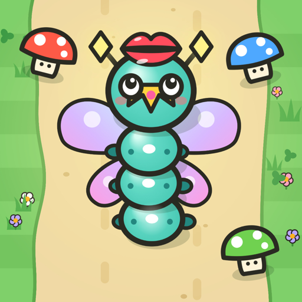
小さなイモムシ「むにゅ」が、
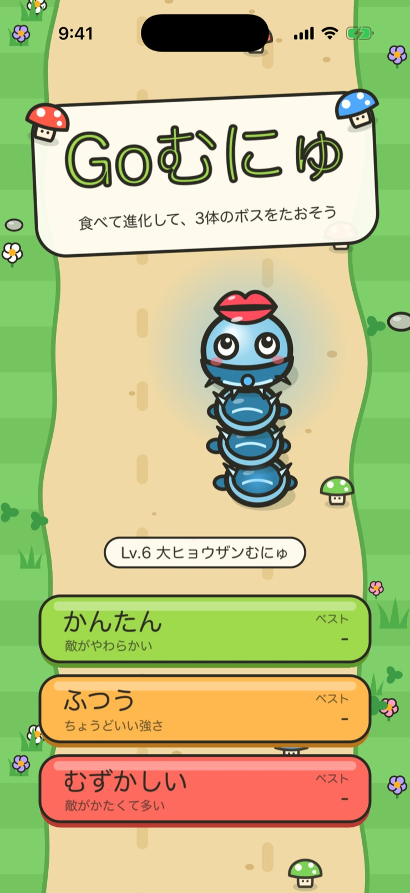
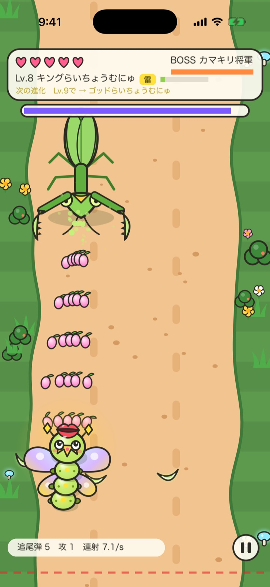
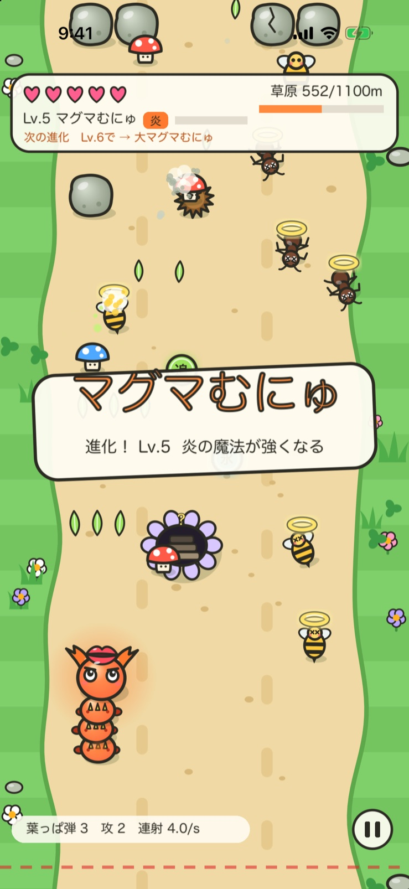
FEATURES
指でなぞるだけの操作で、キノコを食べて、虫をたおして、ボスに挑みます。
画面をなぞると、むにゅが上下左右に動きます。レベルが上がると葉っぱ弾を自動で撃ち、道をふさぐ虫や岩をどんどんたおして進みます。
赤いキノコは攻撃、青いキノコは守り、緑のキノコは魔法。どのキノコを多く食べたかで、進化の系統が決まります。レベルが上がるたびに名前と見た目が変わり、Lv.10で「伝説の姿」になります。
岩をこわしたり宝箱を開けたりすると、連射UP・弾の数UP・追尾弾・貫通弾などの強化アイテムが手に入ります。炎・氷・雷の魔法を手に入れると、専用の攻撃が使えるようになります。
道のとちゅうには、キノコと宝箱がいっぱいの「ひみつの洞窟」が隠れています。見つけたら入ってみよう。うまく使えば、一気に強くなれます。
EVOLUTION
Lv.2でキノコの色によって系統が決まり、Lv.5で持っている魔法によって最終形態が決まります。
赤いキノコ・攻撃が得意
青いキノコ・守りが得意
緑のキノコ・魔法が得意
そのあとも「大」「超」「キング」「ゴッド」と強くなり、Lv.10で「伝説の〇〇むにゅ」に。ツノが伸びたり、よろいにトゲが増えたり、羽が大きくなったり、レベルごとに見た目も変わります。
AREAS
エリアの最後にはボスが待ちかまえています。たおすと階段が現れ、次のエリアへ進めます。
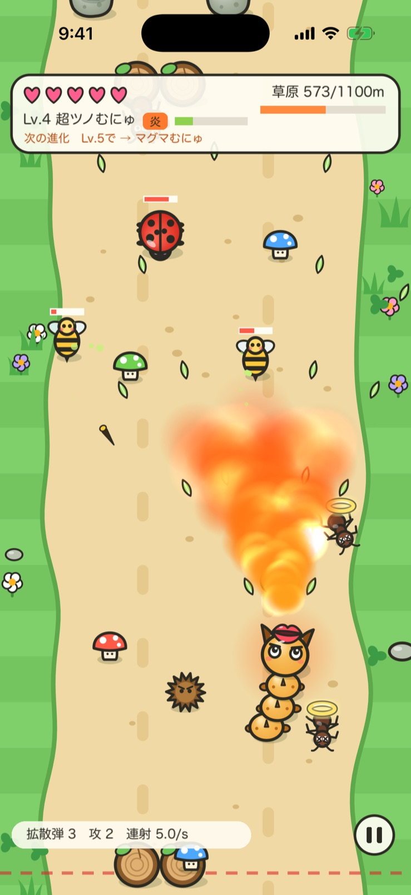
アリやハチ、テントウムシが出てくる最初のエリア。ボスは羽根をばらまくカラス大王。
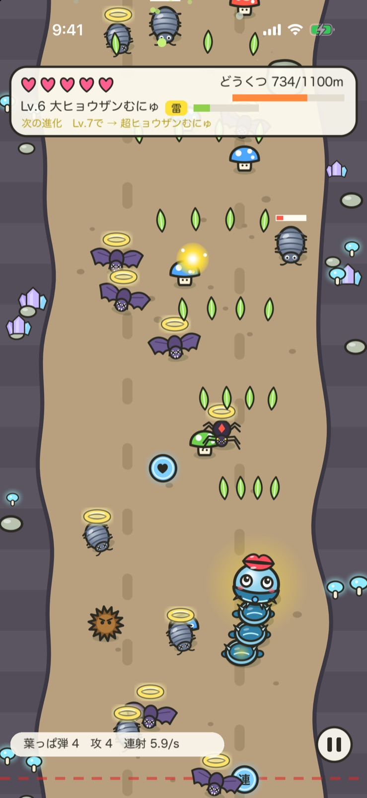
ダンゴムシやコウモリ、クモがひそむ暗いどうくつ。地中から顔を出すモグラ親方に注意。
クワガタやガ、カタツムリが行く手をはばむ最後の森。かまいたちと突進で襲いかかるカマキリ将軍をたおそう。
SCREENSHOTS
横にスクロールして、すべての画面を見られます。
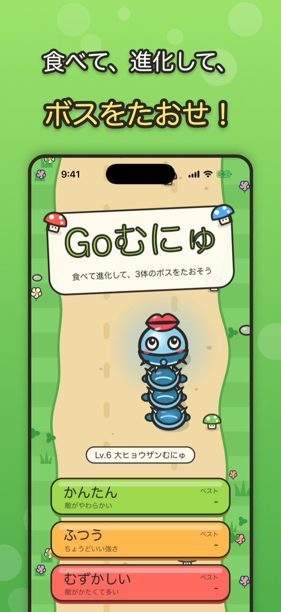
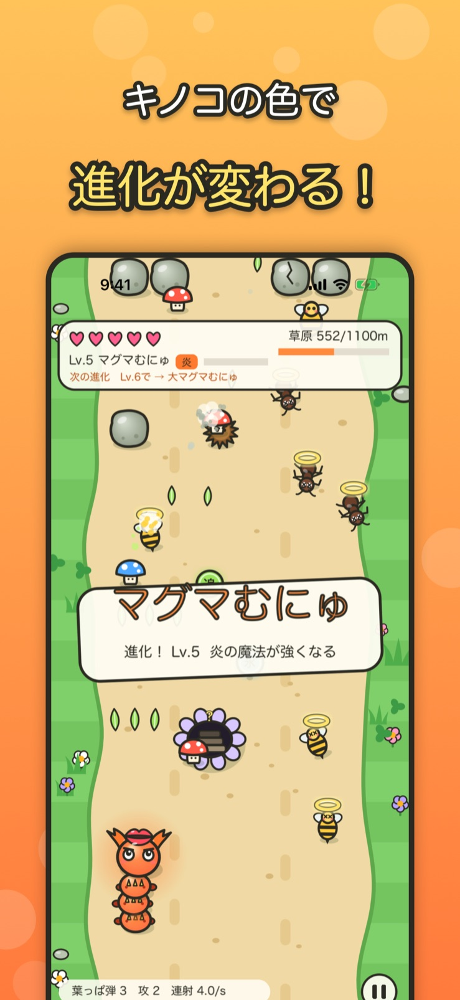
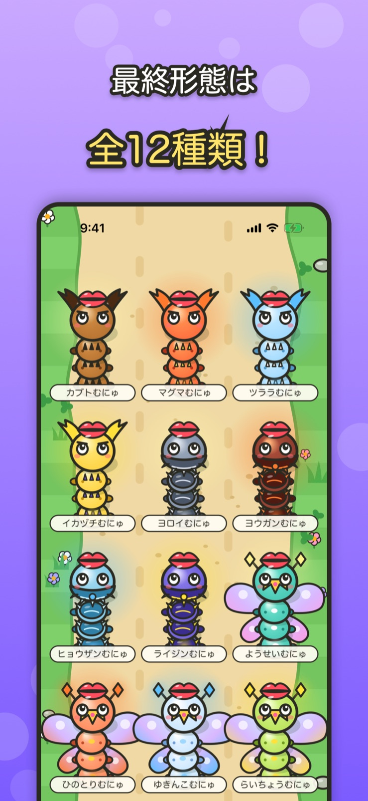
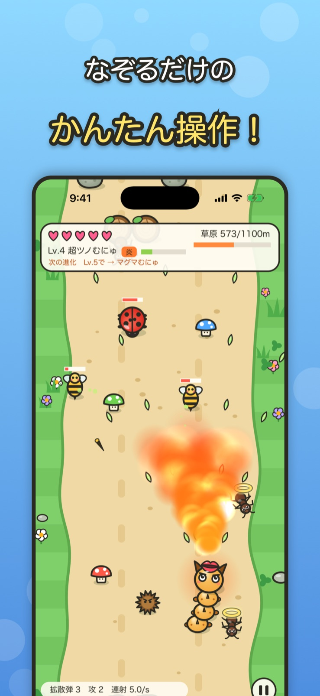
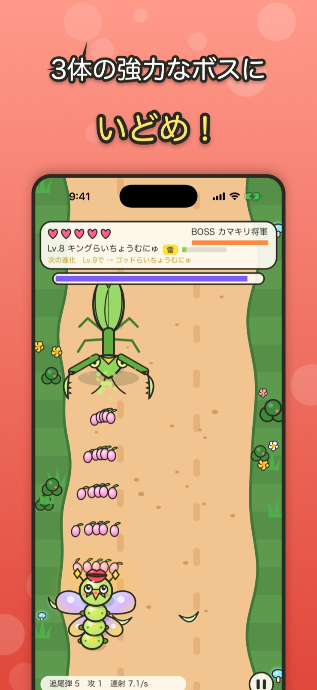
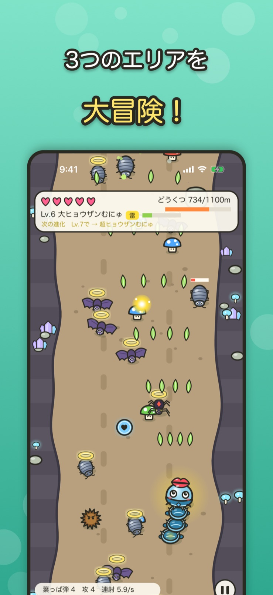
なぞるだけで遊べる、イモムシの進化アクション。
ご意見・ご要望、不具合のご報告を受け付けています。
TwitterのDMで問い合わせるベストスコアは端末内に保存します。ランキングのためにスコアを Game Center に送信します。また、広告の表示に Google AdMob を利用しています。詳しくはプライバシーポリシーをご覧ください。
プライバシーポリシーを読む効果音は、フリー音楽素材「魔王魂」さんの素材を使用しています。
魔王魂